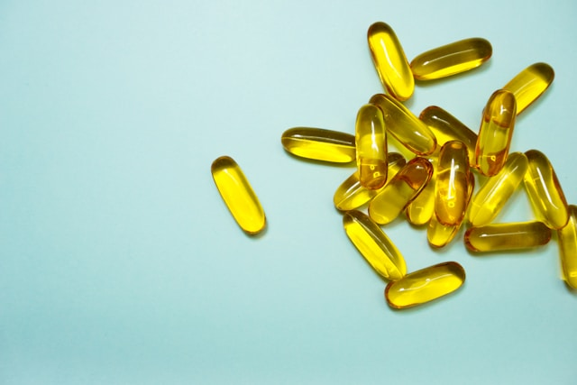
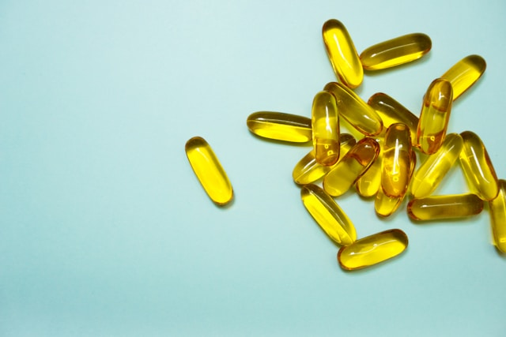

carbohydrates
Carbohydrates are energy-providing nutrients present in potatoes, rice, wheat, maize, and various starches.
- rice
- yams
- bread
- noodles
- spaghetti


Carbohydrates are energy-providing nutrients present in potatoes, rice, wheat, maize, and various starches.
Proteins, crucial for bodybuilding, can be sourced from meat, legumes, and dairy products.

Fats are present in nuts and fruits such as avocados.


Vitamins, known for boosting immunity, can be found in fruits and vegetables.
 


Minerals, vital for improving bodily functions, are present in most foods, fruits, and vegetables


Fiber, essential for digestion, is found in fruits and vegetables.

Water, necessary for creating bodily fluids, is present in fruits, juices, and other liquids.